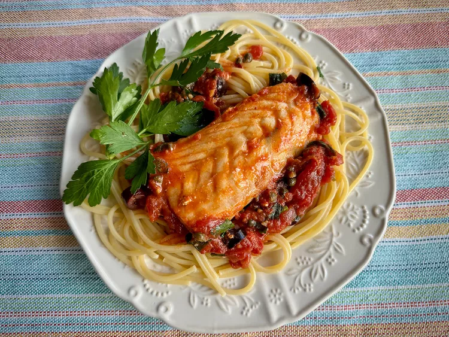

Fish Puttanesca

Description
This fish puttanesca, served over spaghetti, comes together quickly. Normally, puttanesca sauce, simple but robust, doesn’t include a protein, but it’s easy to add some cod filets, and
the addition barely influences the cooking time. Any mild white fish will be just fine in this dish.
Ingredients
- 1/2 pound spaghetti
- 2 tablespoons olive oil
- 2 tablespoons drained capers
- 1 tablespoon anchovy paste, or to taste
Steps
- Bring a large pot of lightly salted water to a boil.
- Meanwhile, heat olive oil in a large skillet over medium-low heat until it shimmers.
- Add capers, anchovy paste, garlic, and red pepper and cook, stirring frequently, until garlic is soft and fragrant, about 2 minutes.
- Drain off about 1/2 cup of the liquid in the tomato can and discard. With clean hands, crush tomatoes, and add to the skillet with the remaining juice.